Samen sterk
Partners
Overheden, erfgoedsites en muziekorganisaties die mee bouwen.
Met steun van

- Vlaamse overheid, kunsten en erfgoed
- Provincie Vlaams-Brabant
- Nationale Loterij
- Projectvereniging de Merode
- Parochies en kerkfabriekenmet de medewerking van
In samenwerking met
- Landschapspark de Merode
- Muziekpublique
- Muziekcentrum Dranouter
- Cluster
- Brosella
- Muziekmuseum Vleeshuis
- MIM
- Abdij van Park
- Abdij van Averbode
- Natuurpunt
- Stad Leuven
- Flanders Folk Network
- Folkwaarts
- Awa vzw
- Muziekclub ’t Ey
Partner worden?
Een gemeente, erfgoedsite of organisatie die wil samenwerken? Vertel ons waar je mee bezig bent.